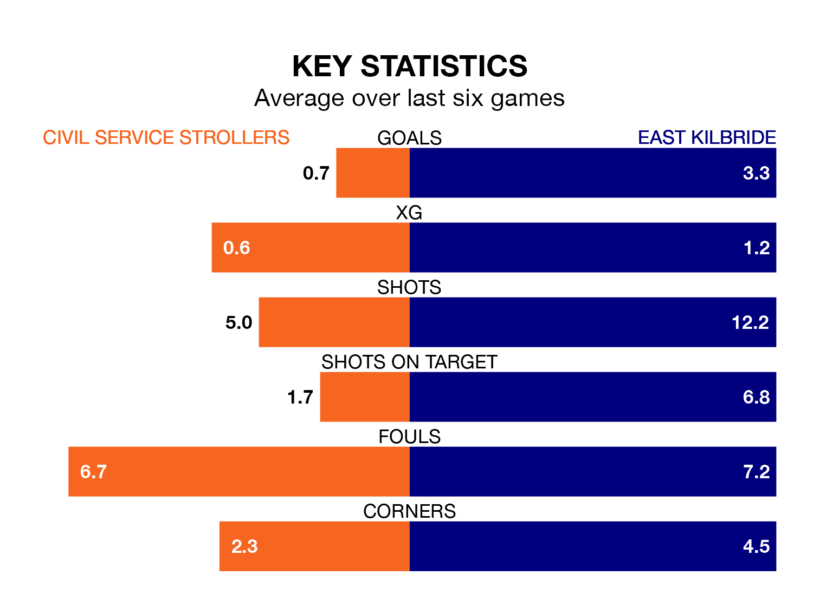

Civil Service Strollers are on a terrible run ahead of hosting East Kilbride at the Civil Service Sports Ground on Wednesday, with just two points collected from their last six games.
Civil Service Strollers have picked up two draws and four losses in their last six Lowland Football League games, and face a Kilby side whose last six games have brought four wins and two losses.
With 89 goals in 30 games so far this season, East Kilbride are the league's highest scorers with 3.0 goals per game. And they are conceding fewer than average, letting in 37 goals at a rate of 1.2 per game.
Civil Service Strollers, meanwhile, are below average scorers, with 1.4 goals per game, compared to a league average of 1.7. They have also conceded 1.4 goals per game.
The Kilby are top of the table after 30 games, of which they have won 23 and drawn three, earning 72 points.
The hosts are nine places behind the away side in 10th, with 12 wins and six draws putting them on 42 points.
In the last 10 years, Civil Service Strollers and East Kilbride have played each other on 11 occasions. Civil Service Strollers won three of them, East Kilbride seven, and they drew once.
On average, Civil Service Strollers scored 0.7 goals and the Kilby 1.8 in those matches.
Their last meeting was on September 30, when East Kilbride won 2-0 at home.
Civil Service Strollers's last match was on Saturday, a 2-1 loss against Tranent Juniors.
East Kilbride beat BSC Glasgow 6-1 last time out, on Sunday.
Updated: 12:39 (UTC), 26/03/24